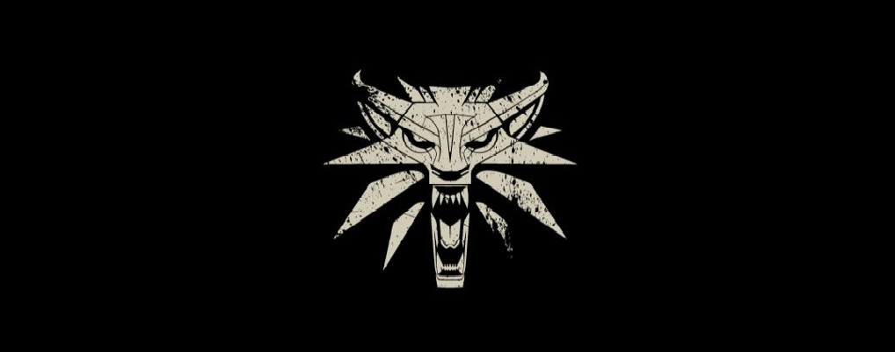
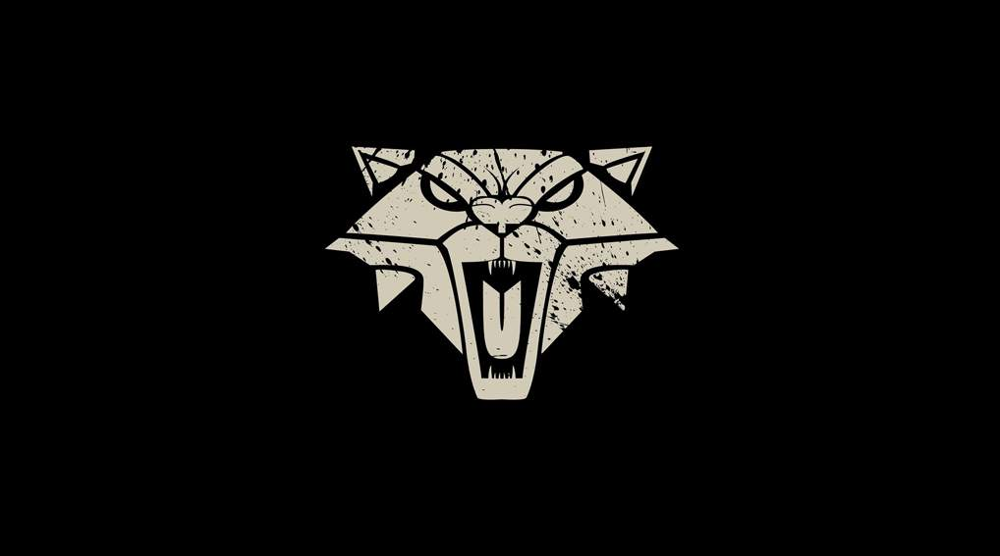
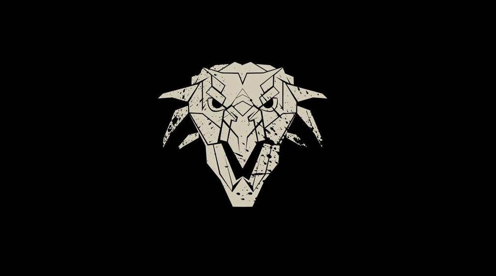
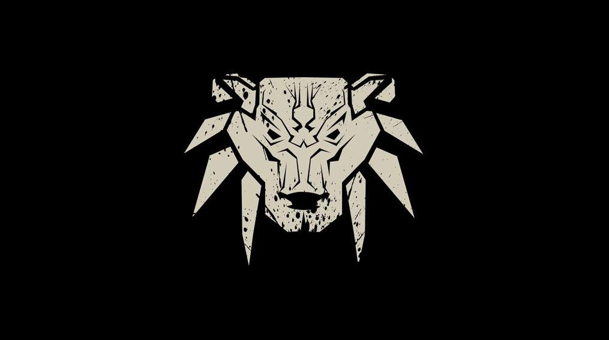

О нас
В общих чертах
Ведьмаки являются профессионалами, которые обладают необходимыми навыками и экипировкой для сражения с монстрами, и знаниями для противодействия проклятьям.
На подготовку уходят долгие годы, в течении которых большинство претендентов погибает, что делает нас более-чем малочисленными и востребованными.
Наша экипировка специфична и ценна.
И из-за этой экипировки, на нас охотятся жадные до денег проходимцы.
Мутации, что дают нам преимущество над обычными людьми, привлекает интерес магов, и настороженность со стороны простолюдин.
Школы
-
Школа Волка
Школа Волка — одна из нескольких известных ведьмачьих школ, действовавших на Континенте.
Именно к этой школе принадлежит знаменитый Геральт из Ривии
Она располагается в крепости Каэр Морхен в окрестностях Каэдвена.
После падения крепости и гибели большинства ведьмаков Волков возглавлял единственный из выживших наставников — Весемир. -
Школа Кота
Коты имеют очень плохую репутацию, поскольку многие из них отличаются жестокостью, садизмом, вероломством и фактически перестают быть ведьмаками,
предпочитая работу наёмников и убийц. -
Школа Грифона
Одна из нескольких известных ведьмачьих школ на Континенте. Как и о большинстве других школ, о ней мало что известно.
В отличие от некоторых других ведьмачьих школ, Школа Грифона обладает превосходной репутацией, а её члены славятся рыцарскими доблестью и добродетелями. -
Школа Медведя
Одна из нескольких известных ведьмачьих школ на Континенте. Как и о большинстве других школ, о ней мало что известно.
-
Школа Змеи
Гортур Гваэд, твердыня Змей, располагалась в горном массиве Тир Тохаир. Её основали отступники из числа последовавших за Арнагадом Медведей, вероломно предав своих братьев.
Однако первыми Змеями двигали не самолюбие или несовпадение взглядов на обучение, но чёткое осознание своего предназначения — раз и навсегда уничтожить Дикую Охоту.
Находясь на территории Нильфгаарда, Школа Змеи куда менее тщательно соблюдала знаменитый принцип ведьмачьего нейтралитета и не избегала поручений владык Империи Великого Солнца, хотя и не обрела дурную славу
На этом всё. Что бы совершить заказ перейдите по ссылке